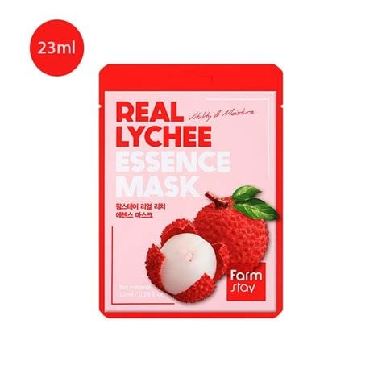
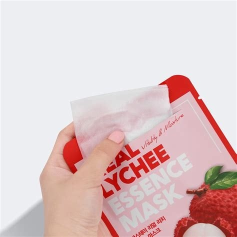

<div> <table style="border-collapse: collapse; width: 99.9809%;" border="1"><colgroup><col style="width: 49.9522%;"><col style="width: 49.9522%;"></colgroup> <tbody> <tr> <td> <div><span style="font-size: 14pt;"><strong><span data-path-to-node="5,0">Farmstay Masca de fata cu extract de litchii</span></strong></span></div> <div><span style="font-size: 14pt;"><strong><span data-path-to-node="5,0">23ml</span></strong></span></div> <div><span style="font-size: 14pt;"><span data-path-to-node="5,0">Masca de fata Farmstay Real Lychee Essence Mask ofera o infuzie puternica de vitalitate si hidratare intr-un ambalaj compact de 23 ml. Bogata in extract natural de litchi, formula sa revigoreaza instant tenul tern, redandu-i stralucirea naturala, energia si un aspect vizibil mai proaspat.</span></span></div> </td> <td></td> </tr> <tr> <td></td> <td><span style="font-size: 14pt;">Momentul deschiderii plicului dezvaluie o masca textila generos imbibata intr-o esenta apoasa si hranitoare de litchi. Designul practic permite o extragere usoara si o aplicare imediata, transformand ingrijirea zilnica intr-o experienta rasfatatoare de tip spa, chiar in confortul casei tale.</span></td> </tr> <tr> <td><span style="font-size: 14pt;">Materialul ultra-fin si translucid al mastii din servetel se muleaza perfect pe conturul fetei, asigurand o aderenta excelenta. Aceasta textura delicata permite transferul optim si uniform al esentei active direct in piele, oferind o senzatie racoritoare si un confort absolut in timpul utilizarii.</span></td> <td></td> </tr> <tr> <td></td> <td><span style="font-size: 14pt;">Ritualul simplu pentru un ten radiant: curata fata, aplica masca uniform si las-o sa actioneze timp de 15-20 de minute. La final, indeparteaza servetelul si maseaza usor esenta ramasa prin miscari delicate de tapotare, pana cand este absorbita complet in piele pentru rezultate maxime.</span></td> </tr> </tbody> </table> </div>